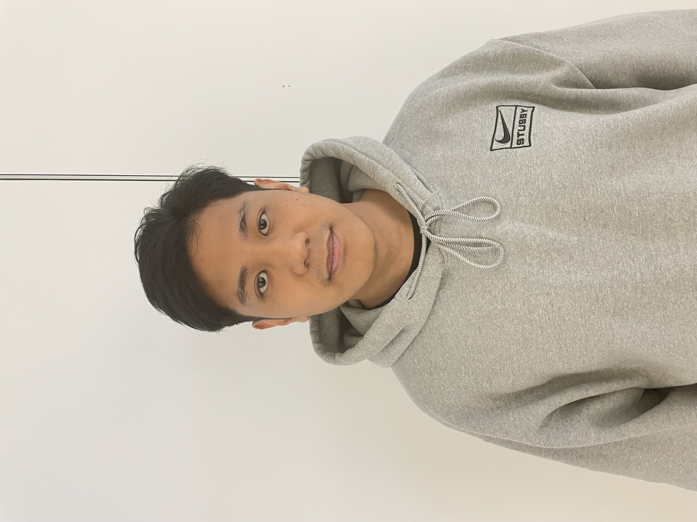

Chi sono

Ciao! Mi chiamo Kevin Ramil e sono un appassionato di informatica che
ha scelto di seguire la propria passione tornando a studiare.
Dopo aver lasciato il mio precedente lavoro, mi sono iscritto a un
corso di informatica per dedicarmi completamente a questo percorso.
Sono una persona motivata, curiosa e determinata ad apprendere sempre
cose nuove: per questo sono aperto anche a opportunità di stage o
collaborazioni che mi permettano di crescere in un ambiente
stimolante.
Affronto le sfide con entusiasmo e vedo ogni problema come
un’occasione per migliorare: il problem solving è uno dei miei punti
di forza.
Amo lavorare in team e credo che la collaborazione sia fondamentale
per raggiungere obiettivi ambiziosi e di qualità.
Durante il mio percorso formativo ho acquisito solide competenze in
HTML, CSS, JavaScript, React, Bootstrap e Java.
Sono desideroso di approfondire ulteriormente queste conoscenze e di
metterle in pratica in un contesto lavorativo reale, imparando ogni
giorno qualcosa di nuovo.
Progetti
-
Fake_Linkedin –
Repo GitHub
Clone di LinkedIn per esercitazioni fullstack (Java Spring – React).
-
Portfolio Personale –
Repo GitHub
Sito portfolio responsive con HTML, CSS e JavaScript.
Competenze
- HTML
- CSS
- JavaScript
- React
- Java
- Git & GitHub
Contatti
- Email: ramil.kevin98@gmail.com
- GitHub: KevR98
- LinkedIn: Profilo LinkedIn